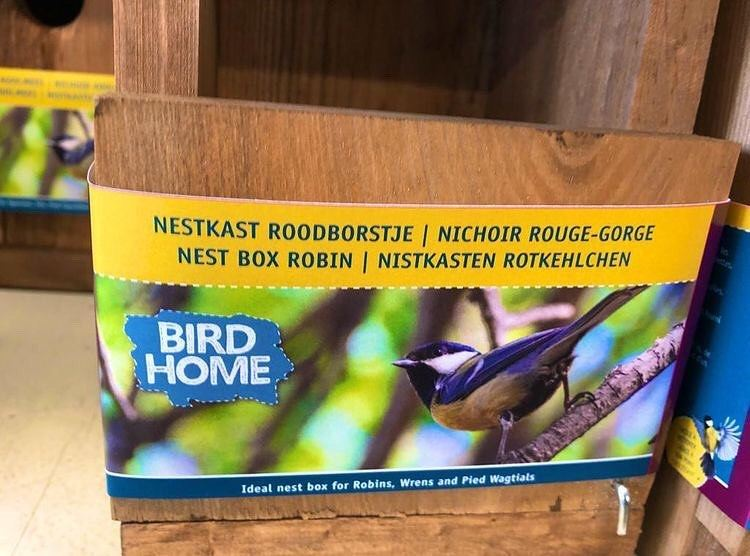

Koolmees op de nestkast voor het roodborstje
18 november 2020 · Bird Home
- Op de foto
- Koolmees
- Het ging over
- Roodborst

Die tuinvogels blijven toch opvallend lastig
Met dank aan @ggbalore voor het insturen!

Die tuinvogels blijven toch opvallend lastig
Met dank aan @ggbalore voor het insturen!